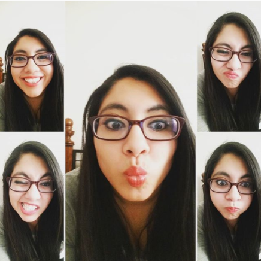

About Me
Born in a small city of Bolivia called Cochabamba. I am a property manager turned into a developer.
I enjoy using my creativity and my out of the box thinking to tackle the challenges that life has presented me.
secret weapon for hard times is smiling. I am a joyful person.
Between work and school, I felt that I still had too much free time in my hands which is why I decided to further
my web developer knowledge and signed up to the UCF coding bootcamp. I like learning as much as I can. Life is too
short to be clueless.
My hobbies now consist on learning how to have a healthy life style, and learning how to not procrastinate to go
do exercise. I am a huge soccer fan! I love playing sports (last time played was 10 years ago), watching and
going to matches. My favorite soccer team by default is a team from my hometown called Wilsterman. I am a huge
supporter of Orlando City SC (Lions …rawr) and Orlando Pride.
I am a home body, on my free time (which is never) you can find me watching movies and tv shows (from 2015…
still catching up!!). Can’t finish an “about me” without talking about food. I am addicted to popcorn and
cholate chip cookies. I eat foods that are good for the soul and that make you happy while you are eating it.